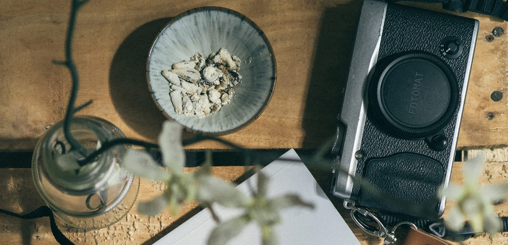

FOTOMATIC
Product Detail
About Us
Follow us

Instant
FORMAT CAMERA
Email us to a requast a demo and to be in our
waiting list for
February 2017
release
Join the waiting list
Advanced ,Automatic,Instant
Shutted speed, apperture and flash output adjust automatically
Beautifully crafted
From the paint outside to the tiny screw inside,Fotomat is crafted with love and 20-year of exoertise
+20 filtres to choose From
Find your creavity with20 different filter designed by our electic in-house photographers
"It's truly something that could create a brand new photography Renaissance"